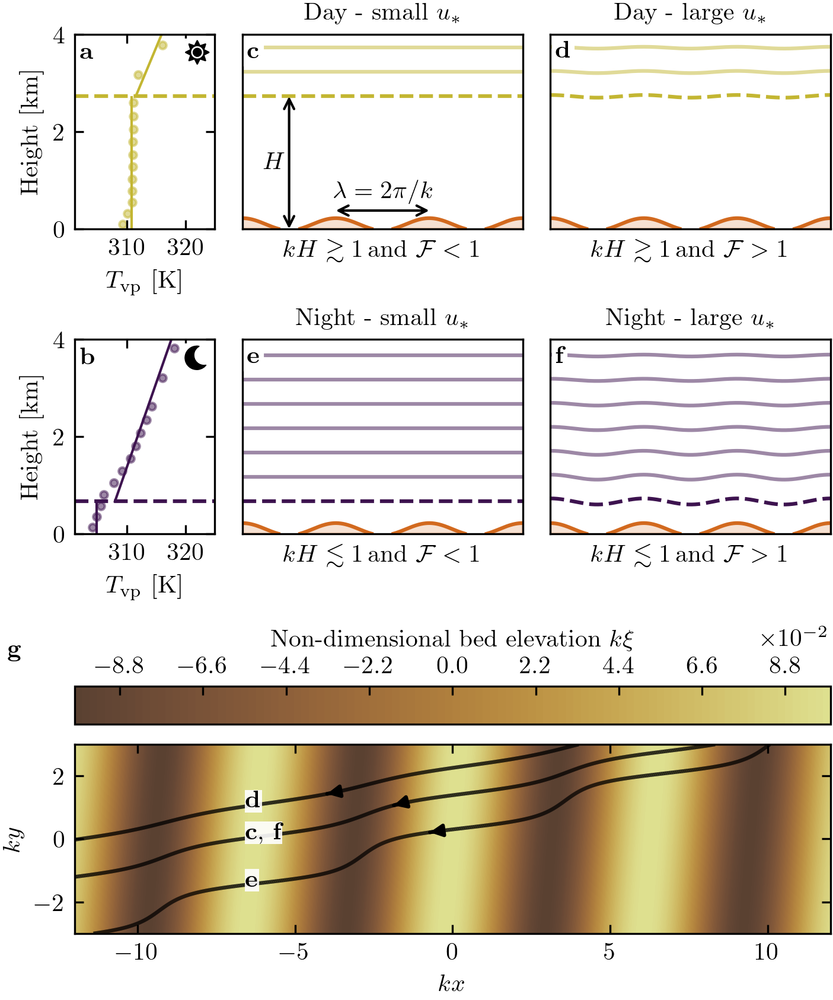

Note
Click here to download the full example code
Figure 4¶
import numpy as np
import matplotlib.pyplot as plt
import sys
import os
sys.path.append('../')
import python_codes.theme as theme
from python_codes.general import cosd, sind
from python_codes.linear_theory import Cisaillement_basal_rotated_wind, coeffA0, coeffB0
def perturb(x, amp, lamb, shift):
return np.cos(2*np.pi*x/lamb)*amp + shift
def plot_vertical_profile(ax, height, Virtual_potential_temperature, grad_free_atm, theta_free_atm, blh, theta_ground, Hmax_fit, color='tab:blue', label=None, alpha_pt=1):
Hfit = np.linspace(blh, Hmax_fit, 100)
#
line = ax.vlines(theta_ground, 0, blh/1e3, color=color, label=label, zorder=-3, lw=1)
ax.axhline(blh/1e3, color=color, ls='--')
ax.plot(np.poly1d([grad_free_atm, theta_free_atm])(Hfit), Hfit/1e3, color=line.get_color(), zorder=-2, lw=1)
ax.plot(Virtual_potential_temperature, height/1e3, '.', color=line.get_color(), zorder=-1, alpha=alpha_pt)
# ax.scatter(theta_ground, blh/1e3, s=30, facecolors=line.get_color(), edgecolors='k', linewidth=2, zorder=0)
def plot_streamlines(ax, z_pos, x, amp, lamb, **kwargs):
for z in z_pos:
ax.plot(x, perturb(x, amp, lamb, z), **kwargs)
def topo(x, y, alpha, k, xi):
return xi*np.cos(k*(cosd(alpha)*x + sind(alpha)*y))
# Loading figure theme
theme.load_style()
# path
path_imgs = '../static/images/'
path_savefig = '../Paper/Figures'
path_outputdata = '../static/output_data/data/'
# ##### Loading meteo data
Data = np.load(os.path.join(path_outputdata, 'Data_final.npy'), allow_pickle=True).item()
Stations = ['South_Namib_Station', 'Deep_Sea_Station']
# #### figure parameters
# ## sketch parameters
flow_color = 'powderblue'
color_dune = '#D2691E'
alpha_dune = 0.2
#
lambda_dune = 2.5
mult = 1.7
hdune = 0.05*lambda_dune*mult
lw_capping_layer = 3
#
n_dunes = 3
xlims = [0, n_dunes*lambda_dune]
x = np.linspace(xlims[0], xlims[1], 500)
dunes = perturb(x, hdune, lambda_dune, 0.75*hdune)
dunes[dunes < 0] = np.nan
#
xmax = x.max()
pad_x = 0.05*xmax
dz = lambda_dune/5
# ## vertical profiles parameters
station = 'Deep_Sea_Station'
time_steps = [30302, 30302, 2012, 2012]
colors = ['tab:red', 'tab:red', 'tab:blue', 'tab:blue']
Hmax_fit = 10000 # [m]
zmax = 0.55*Hmax_fit/1e3
# ## labels
titles = [r'Day - large $u_{*}$', 'Day - small $u_{*}$', 'Night - large $u_{*}$', 'Night - small $u_{*}$']
labels = [r'\textbf{a}', r'\textbf{b}', r'\textbf{c}', r'\textbf{d}', r'\textbf{e}', r'\textbf{f}', r'\textbf{g}']
xlabels = [r'$k H \gtrsim 1$' '\n' r'$\mathcal{F}r_{\textup{S}} \, \textup{and/or} \, \mathcal{F}r_{\textup{I}} < 1$',
r'$k H \gtrsim 1$' '\n' r'$\mathcal{F}r_{\textup{S}} \, \textup{and/or} \, \mathcal{F}r_{\textup{I}} > 1$',
r'$k H \lesssim 1$' '\n' r'$\mathcal{F}r_{\textup{S}} \, \textup{and/or} \, \mathcal{F}r_{\textup{I}} < 1$',
r'$k H \lesssim 1$' '\n' r'$\mathcal{F}r_{\textup{S}} \, \textup{and/or} \, \mathcal{F}r_{\textup{I}} > 1$']
props = dict(boxstyle='square, pad=0.1', color='white', alpha=1)
# #### Figure
fig, axrr = plt.subplots(4, 3, figsize=(theme.fig_width, 1.2*theme.fig_width),
constrained_layout=True,
gridspec_kw={'width_ratios': [0.5, 1, 1], 'height_ratios': [1, 1, 0.005, 1.3]})
for ax in axrr[2, :]:
ax.set_axis_off()
# #### Plot vertical profiles
for i, (t, ax) in enumerate(zip(time_steps[::2], axrr[:2, 0].flatten())):
ax.set_title(r' ')
ax.text(0.04, 0.91, labels[i*3], ha='left', va='center', transform=ax.transAxes, bbox=props)
ax.set_ylim(0, top=zmax)
ax.set_xlim(305, 325)
ax.set_ylabel('Height [km]')
ax.set_xlabel(r'$T_{\textup{vp}}$ [K]')
#
plot_vertical_profile(ax, Data[station]['height'][:, t], Data[station]['Virtual_potential_temperature'][:, t],
Data[station]['gradient_free_atm'][t], Data[station]['theta_free_atm'][t],
Data[station]['Boundary layer height'][t], Data[station]['theta_ground'][t], Hmax_fit,
color=colors[2*i], alpha_pt=0.5)
# #### Sketches
amplitudes = [0, 0.5, 0, 1]
for i, (t, ax) in enumerate(zip(time_steps, axrr[:2, 1:].flatten())):
ax.set_xticks([])
ax.set_yticks([])
ax.set_ylim(0, top=zmax)
ax.set_xlim(xlims)
ax.set_aspect('equal')
# dunes
a, = ax.plot(x, dunes, color=color_dune)
ax.fill_between(x, dunes, color=a.get_color(), alpha=alpha_dune)
# FA
amp = amplitudes[i]*hdune
z_pos = np.arange(Data[station]['Boundary layer height'][t]/1e3, zmax, dz)
plot_streamlines(ax, z_pos[1:], x, 0.5*amp, lambda_dune, color=colors[i], alpha=0.5)
# capping layer
z_pos = np.arange(Data[station]['Boundary layer height'][t]/1e3, zmax, dz)
plot_streamlines(ax, z_pos[0:1], x, 0.5*amp, lambda_dune, color=colors[i], ls='--')
#
ax.set_xlabel(xlabels[i])
ax.set_title(titles[i])
ax.text(0.0176, 0.91, labels[i + 1 + i // 2], ha='left', va='center', transform=ax.transAxes, bbox=props)
axrr[0, 1].annotate('', xy=[lambda_dune, 3*hdune], xytext=[2*lambda_dune, 3*hdune], transform=axrr[0, 1].transData, arrowprops=dict(arrowstyle="<->", color='k', shrinkA=0, shrinkB=0))
axrr[0, 1].text(1.5*lambda_dune + 0.03, 3*hdune + 0.4, r'$\lambda=2\pi/k$', ha='center', va='center')
hflow = Data[station]['Boundary layer height'][time_steps[0]]/1e3
axrr[0, 1].annotate('', xy=[lambda_dune/2, 0], xytext=[lambda_dune/2, hflow], transform=axrr[0, 1].transData, arrowprops=dict(arrowstyle="<->", color='k', shrinkA=0, shrinkB=0))
axrr[0, 1].text(lambda_dune/2 - 0.15, hflow/2, r'$H$', ha='right', va='center')
# #### Horizontal view
# merging axes
gs = axrr[0, 0].get_gridspec()
for ax in axrr[-1, :]:
ax.remove()
ax = fig.add_subplot(gs[-1, :])
# ## streamline parameters
station = Stations[1]
Data_DEM = np.load(os.path.join(path_outputdata, 'Data_DEM.npy'), allow_pickle=True).item()[station]
#
alpha = Data_DEM['orientation'] - 90 # dune orientation, degrees
k = 1 # non dimensional wavenumber
AR = 0.1
skip = (slice(None, None, 50), slice(None, None, 50))
eta_0 = 2.5e-6
# horizontal space
x = np.linspace(-12, 12, 1000)
y = np.linspace(-3, 3, 1000)
X, Y = np.meshgrid(x, y)
Theta_list = [70, 190, 190]
A0_list = [coeffA0(eta_0), coeffA0(eta_0), 8]
B0_list = [coeffB0(eta_0), coeffB0(eta_0), 2]
cnt = ax.contourf(x, y, topo(X, Y, alpha, k, AR), levels=100, vmin=-(AR + 0.06),
vmax=AR + 0.02, zorder=-5, cmap=theme.cmap_topo)
for c in cnt.collections:
c.set_edgecolor("face")
c.set_rasterized(True)
for i, (theta, A0, B0, c) in enumerate(zip(Theta_list, A0_list, B0_list, colors)):
TAU = Cisaillement_basal_rotated_wind(X, Y, alpha, A0, B0, AR, theta)
ustar = np.sqrt(np.linalg.norm(np.array(TAU), axis=0))
theta = np.arctan2(TAU[1], TAU[0])
# ax.quiver(X[skip], Y[skip], TAU[0][skip], TAU[1][skip], color='grey')
# strm = ax.streamplot(X, Y, TAU[0], TAU[1], color=np.sqrt(TAU[0]**2 + TAU[1]**2), cmap='inferno', density=50, start_points=[[4, 5-0.5*i]])
strm = ax.streamplot(X, Y, ustar*np.cos(theta), ustar*np.sin(theta),
color=c, density=50, start_points=[[4, 3-0.5*i]])
cb = fig.colorbar(cnt, label=r'Non-dimensional bed elevation $k \xi$', ax=ax, location='top', pad=0.08)
cb.formatter.set_powerlimits((0, 0))
cb.update_ticks()
ax.set_xlabel('$kx$')
ax.set_ylabel('$ky$')
ax.set_aspect('equal')
fig.text(-0.07, 1.5, labels[-1], ha='right', va='center', transform=ax.transAxes)
plt.savefig(os.path.join(path_savefig, 'Figure4.pdf'))
plt.show()
Total running time of the script: ( 0 minutes 5.035 seconds)